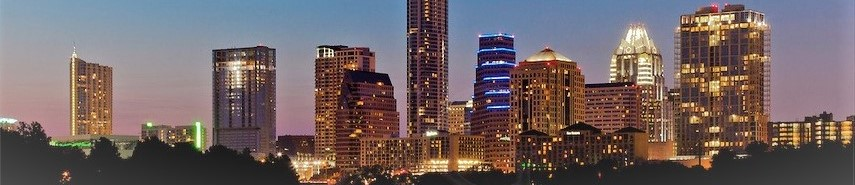

Exploring Austin
Lunch
True Food Kitchen
True Food Kitchen: a restaurant inspired by the philosophy that food should make you feel better. They are a passionate collective of accomplished chefs, visionary restauranteurs and a renowned doctor of integrated medicine, who believe delicious dining and conscious nutrition can go hand in hand. Here, they invite guests to become a part of a world where great tasting food and thoughtfully crafted beverages—shared in an environment of infectious positivity—can be the foundation for a life well lived.
Happy Hour: Mon.-Fri. 3:00 to 6:00 pm